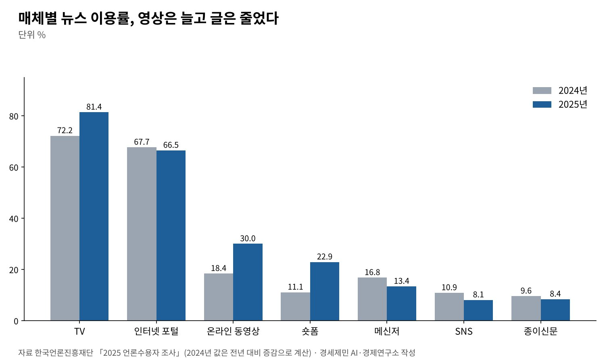
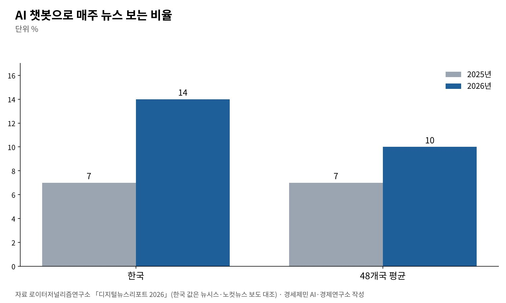

[AI 칼럼] '읽는 뉴스' 저물고 '보는 뉴스' 떴다, 이제 AI가 뉴스를 답한다
TV 81.4%·동영상 30.0%·숏폼 22.9%로 뛰고, 종이신문 8.4%는 조사 이래 최저
한국인 14%가 AI 챗봇으로 뉴스 봐, 1년 새 두 배로 48개국 평균 10% 웃돌아
뉴스 신뢰 30%로 48개국 평균 37%에 못 미쳐, 언론사 몫은 갈수록 준다
AI경제저널=김갑봉 기자 | 한국인이 뉴스를 만나는 길이 바뀌었다. 한국언론진흥재단이 2025년 12월 31일 낸 「2025 언론수용자 조사」를 보면 TV와 온라인 동영상, 숏폼 뉴스 이용률이 함께 뛰었다. 포털 뉴스 이용률은 뒷걸음쳤고 종이신문 열독률은 조사 이래 가장 낮다.
반년 뒤 나온 국제 조사는 다음 변화를 보여준다. 영국 옥스퍼드대 로이터저널리즘연구소가 6월 16일 낸 「디지털뉴스리포트 2026」에서 한국인 14%가 AI 챗봇으로 뉴스를 봤다. 1년 전 7%에서 두 배가 됐다.
'읽는 뉴스'가 '보는 뉴스'에 자리를 내주는 사이 'AI가 답하는 뉴스'가 들어섰다. 이용자는 늘어도 언론사로 오는 길은 좁아진다. 두 조사로 뉴스 시장의 수요가 어디로 옮겨 가는지 짚는다.
영상 매체가 뉴스 이용 증가를 다 가져갔다
조사는 전국 만 19세 이상 성인 6000명을 가구 방문 면접으로 만났다. 표본오차는 95% 신뢰수준에서 ±1.3%포인트다. TV 뉴스 이용률은 81.4%로 1년 전보다 9.2%포인트 올랐다.
온라인 동영상 플랫폼 뉴스 이용률은 18.4%에서 30.0%로 11.6%포인트 뛰었다. 숏폼 뉴스는 11.1%에서 22.9%로 두 배를 넘었다. 동영상으로 뉴스를 본 사람의 99.0%가 유튜브를 썼다.
글 매체는 모두 뒷걸음쳤다. 인터넷 포털은 67.7%에서 66.5%로, 메신저는 16.8%에서 13.4%로 내려갔다. SNS는 8.1%로 10년 새 가장 낮다. 포털 뉴스 이용률은 2021년 79.2%가 꼭짓점이었다.
종이신문 열독률은 8.4%로 1.2%포인트 떨어져 조사 이래 최저다. 2015년 25.4%의 3분의 1에 못 미친다. 뉴스 이용은 늘었지만 그 늘어난 몫을 영상 매체가 다 가져갔다.

신뢰는 올랐지만 불신의 까닭은 그대로다
뉴스와 시사정보 전반을 믿는다는 응답은 49.0%다. 1년 전 45.5%보다 3.5%포인트 올랐다. 5점 만점 평균은 3.36점에서 3.44점이 됐다. 믿지 않는다는 응답은 7.3%다.
불신의 까닭은 바뀌지 않았다. 한국 언론의 문제를 5점 척도로 물었더니 낚시성 기사가 3.66점으로 가장 심각했다. 어뷰징 기사가 3.65점, 편파적 기사가 3.63점으로 뒤를 이었다.
언론인을 보는 눈도 엇갈렸다. 사회적 영향력은 3.79점으로 높게 봤지만 도덕성은 3.18점으로 가장 낮게 봤다. 힘은 세다고 보면서 그 힘을 바르게 쓰는지는 의심한다.
48개국 조사에서 본 한국, 포털 의존 2위·신뢰 30%
로이터저널리즘연구소는 48개국 9만7520명을 조사했다. 한국 응답자 가운데 포털과 검색·뉴스 모음 서비스를 뉴스의 주된 길로 꼽은 비율은 61%다. 48개국 가운데 일본 65%에 이어 두 번째다.
포털 의존은 2021년 이후 해마다 줄고 있다. 그 자리를 소셜미디어가 채운다. 소셜미디어를 주된 길로 꼽은 비율은 2019년 9%에서 올해 21%로 올랐다.
한국의 유튜브 뉴스 이용은 48개국 평균을 웃돈다. 50대와 60대 이상에서 가장 높고 20~40대에서 낮다. 국내 조사에서 본 영상 뉴스의 증가와 같은 방향이다.
뉴스 신뢰도는 30%로 1년 전보다 1%포인트 내렸다. 48개국 평균 37%에 못 미친다. 국내 조사에서 신뢰가 오르고 국제 조사에서 내린 데는 물음과 표본의 차이가 있다. 두 조사 모두 한국 언론의 신뢰 기반이 얇다는 점은 같다.
AI 챗봇 뉴스 14%, 언론사로 가는 길은 더 좁아진다
국제 조사의 새 흐름은 AI다. 48개국 평균으로 AI 챗봇에서 매주 뉴스를 보는 비율은 7%에서 10%로 올랐다. 한국은 7%에서 14%로 두 배가 돼 평균을 웃돈다. 챗지피티, 제미나이, 코파일럿, 메타 AI 순으로 많이 썼다.
챗봇은 답을 주고 끝내는 경우가 많다. 연구소 조사에서 챗봇 이용자 가운데 원문 기사를 늘 또는 자주 눌러 보는 비율은 42%였다. 나머지는 가끔 누르거나 거의 누르지 않는다.
국내 조사로는 아직 초기다. 2025 언론수용자 조사에서 생성형 AI 서비스를 쓴 사람은 20.7%, 생성형 AI로 뉴스를 본 사람은 2.1%였다. 이 가운데 93.4%가 챗지피티를 썼다. 국제 조사의 14%와는 물음이 달라 견줄 때 조심해야 한다.

수요는 영상과 AI로, 언론사는 공급 방식을 바꿔야 한다
경제학으로 보면 뉴스 수요가 줄지 않았다. 바뀐 것은 유통 경로와 소비 형태다. 이용자는 같은 정보를 더 적은 시간과 품으로 얻는 길로 옮겨 간다. 영상과 숏폼, AI 요약이 그 길이다.
문제는 그 길의 주인이다. 동영상 뉴스의 99.0%가 유튜브를 거친다. 숏폼과 챗봇도 몇몇 해외 플랫폼이 쥐었다. 언론사가 만든 정보의 값이 플랫폼 광고와 구독으로 넘어간다. 분배의 문제다.
지역언론에는 더 아프다. 지면과 포털이라는 두 기둥이 함께 약해졌다. 영상으로 독자를 먼저 만나고 깊이 있는 글로 신뢰를 지키는 두 겹 구조가 필요하다. AI 검색이 인용할 만한 원문을 쌓는 일도 같은 과제다.
신뢰는 공급 혁신의 바탕이다. 낚시성·어뷰징 기사가 불신의 첫째 까닭으로 꼽혔다. 클릭을 좇는 기사로는 AI 시대에 살아남기 어렵다. 따져 묻고 근거를 밝힌 기사만이 AI 답변 속에서도 출처로 남는다.
뉴스는 이제 읽고, 보고, 묻는다. 매체가 바뀌어도 사실을 확인하는 노동의 값은 그대로다. 그 노동이 제값을 받는 유통 구조를 만드는 일이 언론과 정책이 함께 풀 숙제다.
참고문헌
기관 자료
- 한국언론진흥재단, 「2025 언론수용자 조사」, 2025년 12월 31일. https://www.kpf.or.kr/front/research/consumerListPage.do
- 한국언론진흥재단, 「2025 언론수용자 조사」 보고서 원문(PDF 사본). https://t1.daumcdn.net/brunch/service/user/1eYE/file/VuJEY9Rmm258tZVNdBD6AP5e2ns.pdf
- Reuters Institute for the Study of Journalism, "Overview and key findings of the 2026 Digital News Report", 2026년 6월 16일. https://reutersinstitute.politics.ox.ac.uk/digital-news-report/2026/dnr-executive-summary
- Reuters Institute for the Study of Journalism(이현우·전창영·양소은 한국언론진흥재단 선임연구위원 집필), "South Korea", 『Digital News Report 2026』, 2026년 6월 16일. https://reutersinstitute.politics.ox.ac.uk/digital-news-report/2026/south-korea
언론 보도
- 김고은, "'읽는 뉴스'서 '보는 뉴스'로… 포털 지고 유튜브 급등", 기자협회보, 2026년 1월 4일. https://www.journalist.or.kr/news/article.html?no=60017
- 이수지, "한국인 뉴스 경로 포털서 소셜미디어로 이동… 60대 이상 유튜브 의존 '뚜렷'", 뉴시스, 2026년 6월 16일. https://www.newsis.com/view/NISX20260616_0003671612
- 김민수, ""요즘 누가 뉴스봐요"…포털 뉴스 줄고 유튜브·AI 늘었다", 노컷뉴스, 2026년 6월 16일. https://www.nocutnews.co.kr/news/6533916
- GIJN Staff, "'Unsettled Time': 2026 Reuters Institute Digital News Report Finds Rise of Social Media, Video Creators, and AI Chatbots Amid Falling News Interest and Trust", GIJN, 2026년 6월 18일. https://gijn.org/stories/2026-reuters-institute-digital-news-report/
- NCS Staff, "Reuters Institute releases 2026 Digital News Report", NewscastStudio, 2026년 6월 18일. https://www.newscaststudio.com/2026/06/18/reuters-https-reutersinstitute-politics-ox-ac-uk-digital-news-report-2026-how-news-creators-are-impacting-politics-and-media-around-world-2026/
[사진 출처]
- [사진1] 작성자 미상, "Newspapers being loaded, Sydney, 1920.jpg", 위키미디어 공용, 퍼블릭 도메인. https://commons.wikimedia.org/wiki/File:Newspapers_being_loaded,_Sydney,_1920.jpg
※ 이 기사는 AI 프로그램 클로드를 활용해 작성했습니다.
관련기사
- [AI 칼럼] AI 다섯 개로 220쪽 보고서를 써 보니, 일한 도구와 논 도구
- [AI 칼럼] AI 시대 진짜 공부, 따지고 충분히 자야 머리에 남는다
- [AI동향] AI 패권 경쟁의 병목은 메모리, 9월 반도체 수출 603억 달러
- [AI동향] 오픈AI, AI가 쓴 수학 논문 722편 공개…하루 만에 3편 철회
저작권자 © AI경제저널 무단전재 및 재배포, AI학습 및 활용 금지